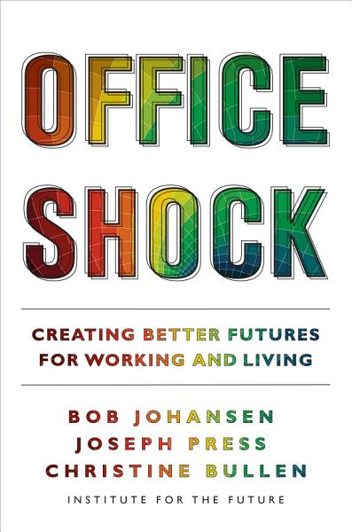

I am an applied researcher, educator and advisor exploring how AI is changing innovation, education, and transformation. My work connects foresight, design and leadership to facilitate the transition to better futures. I bring these questions into keynotes, advisory conversations, and leadership coaching.
Je suis chercheur en recherche appliquée, enseignant et conseiller. J’explore comment l’IA fait évoluer l’innovation, l’éducation et la transformation. Mon travail relie prospective, design et leadership pour faciliter la transition vers de meilleurs futurs. J’aborde ces questions dans mes conférences, mes échanges de conseil et mon coaching de dirigeants.
我是一名应用研究者、教育工作者和顾问，探索AI如何改变创新、教育与转型。我的工作将前瞻、设计与领导力相结合，促进向更美好未来的转型。我通过主题演讲、咨询交流和领导力教练，探讨这些问题。
My research and teaching connect foresight, design and leadership to explore how people and organizations can shape better futures. The areas below bring together questions developed with colleagues and practitioners, and the publications that have grown from this work.
Mes recherches et mon enseignement relient prospective, design et leadership pour explorer comment les personnes et les organisations peuvent façonner de meilleurs futurs. Les domaines ci-dessous réunissent les questions développées avec des collègues et des praticiens, ainsi que les publications issues de ce travail.
我的研究与教学连接前瞻、设计与领导力，探索个人和组织如何塑造更美好的未来。以下领域汇集了我与同事和实践者共同探讨的问题，以及由此形成的出版成果。
Develop creative capability alongside AI
Développer ses capacités créatives avec l’IA
与AI协作，发展人的创造能力
How can working with AI strengthen our creativity and judgment? My research explores how practitioners configure AI collaborators, question their outputs, and retain responsibility for creative decisions. Agentic Creative Intelligence, co-authored with Yilin Wang, develops these questions through the Creative Council: a framework for relationships between practitioners, intelligent intermediaries, and agents.
Comment le travail avec l’IA peut-il développer notre créativité et notre jugement ? Mes recherches portent sur la manière de configurer des collaborateurs IA, de questionner leurs propositions et d’assumer les décisions créatives. Agentic Creative Intelligence, coécrit avec Yilin Wang, explore ces questions à travers le Creative Council, un cadre reliant praticiens, intermédiaires intelligents et agents.
与AI合作，如何促进人的创造力与判断力？我的研究关注实践者如何配置AI协作者、审视其输出，并对创意决策负责。我与Yilin Wang合著的Agentic Creative Intelligence通过“创意委员会”框架，探讨实践者、智能中介与智能体之间的关系。
Explore possible futures and choices today
Explorer les futurs possibles et les choix présents
探索可能的未来，思考当下的选择
I use foresight and design to explore possible futures, question assumptions, and consider the choices we can make today. This work examines how organizations and communities can participate in transitions towards more sustainable futures. Designing Sustainable Futures, co-authored with Manuela Celi, brings together research, experiments, and practitioner experiences.
J’utilise la prospective et le design pour explorer les futurs possibles, questionner les hypothèses et réfléchir aux choix que nous pouvons faire aujourd’hui. Ce travail examine comment les organisations et les communautés peuvent participer aux transitions vers des futurs plus durables. Designing Sustainable Futures, coécrit avec Manuela Celi, réunit recherches, expérimentations et expériences de praticiens.
我运用前瞻与设计探索可能的未来、审视假设，并思考今天可以作出的选择。这项工作关注组织和社区如何参与向更可持续未来的转型。与Manuela Celi合著的Designing Sustainable Futures汇集了研究、实验与实践者的经验。
From a useful question to a venture worth building
D’une question pertinente à un projet entrepreneurial
从有价值的问题出发，探索创业方向
Design offers a way to frame problems, understand people’s needs, and test ideas before building a venture. My teaching and research explore these practices with founders and small teams, including the possibilities and limits of working with AI. A Design Driven Guide for Entrepreneurs provides a foundation for this work.
Le design aide à formuler les problèmes, comprendre les besoins et expérimenter avant de créer une entreprise. Mon enseignement et mes recherches explorent ces pratiques avec des entrepreneurs et de petites équipes, y compris les possibilités et les limites de l’IA. A Design Driven Guide for Entrepreneurs constitue l’un des fondements de ce travail.
设计帮助创业者界定问题、理解需求，并在投入建设前检验想法。我的教学与研究和创业者、小型团队一起探索这些实践，包括使用AI的可能性与局限。A Design Driven Guide for Entrepreneurs为这项工作提供了基础。
Connect technological change with how people work
Relier évolution technologique et pratiques de travail
将技术变革与人的工作方式相联系
Transformation involves more than introducing new technologies. My work explores how purpose, working practices, and leadership can evolve together. Corporate experience and applied research inform how I approach these questions with organizations. Office Shock, co-authored with Bob Johansen and Christine Bullen, examines choices about the future of working and living.
La transformation ne se limite pas à l’introduction de nouvelles technologies. Mon travail explore comment la finalité, les pratiques de travail et le leadership peuvent évoluer ensemble. Mon expérience en entreprise et la recherche appliquée nourrissent ma manière d’aborder ces questions avec les organisations. Office Shock, coécrit avec Bob Johansen et Christine Bullen, examine les choix qui façonnent l’avenir du travail et de la vie quotidienne.
转型不仅仅是引入新技术。我的工作探索组织的宗旨、工作实践与领导力如何共同发展。企业经验与应用研究为我和组织共同探讨这些问题提供了基础。与Bob Johansen、Christine Bullen合著的Office Shock探讨了工作与生活未来的不同选择。

Build shared understanding for change
Construire une compréhension commune du changement
在变革中建立共同理解
How do people develop a shared direction while making room for different perspectives? My research and teaching explore how design and leadership can support collective learning, participation, and the capacity to act. Innovation, Design and Leadership: Transformation in the Digital Era presents the IDeaLs research that informs this work. I continue to explore its implications as AI enters organizational life.
Comment construire une direction commune tout en faisant place à des perspectives différentes ? Mes recherches et mon enseignement explorent comment le design et le leadership peuvent soutenir l’apprentissage collectif, la participation et la capacité d’agir. Innovation, Design and Leadership: Transformation in the Digital Era présente les recherches IDeaLs qui nourrissent cette démarche, dont j’explore aujourd’hui les implications face à l’IA.
人们如何在容纳不同观点的同时形成共同方向？我的研究与教学探索设计和领导力如何支持集体学习、参与和行动能力的发展。Innovation, Design and Leadership: Transformation in the Digital Era介绍了为这项工作提供基础的IDeaLs研究。我也在继续探索AI进入组织生活后，这些研究带来的启示。
Trained as an architect, with a doctorate from MIT, I have worked across corporate transformation, design education, and applied research. I founded Deloitte Digital Switzerland, co-created the Strategic Design and Management program at Parsons, and co-founded and scientifically co-directed IDeaLs at Politecnico di Milano. At SUES, I now help connect AI, design education, and interdisciplinary research.
Architecte de formation et titulaire d’un doctorat du MIT, j’ai travaillé dans la transformation en entreprise, l’enseignement du design et la recherche appliquée. J’ai fondé Deloitte Digital Switzerland, participé à la création du programme Strategic Design and Management à Parsons et cofondé et codirigé scientifiquement IDeaLs au Politecnico di Milano. À la SUES, je contribue aujourd’hui à relier IA, enseignement du design et recherche interdisciplinaire.
我接受过建筑学训练，拥有麻省理工学院博士学位，工作经历涵盖企业转型、设计教育与应用研究。我创立了Deloitte Digital Switzerland，参与创建Parsons的战略设计与管理项目，并共同创立、共同担任米兰理工大学IDeaLs项目的科学负责人。如今在上海工程技术大学，我致力于连接AI、设计教育与跨学科研究。
Vice Dean, SUES Design School
Full Professor, Shanghai University of Engineering Science
Director, Livable Futures Lab
Program Head, Strategy + Management
China Foreign National Expert, Donghua University
Associated Partner, Copenhagen Institute for Futures Studies
Research Advisor, Institute for the Future
Founder, Deloitte Digital Switzerland
Program Lead, Center for Creative Leadership
Research Advisor, MIT Media Lab
Visiting Professor, Politecnico di Milano
Visiting Faculty, Parsons New School of Design
Ph.D. Design Technology, MIT
S.M. Architecture, MIT
B.S. Managerial Economics, Carnegie Mellon University
Vice-doyen, École de Design de la SUES
Professeur titulaire, Shanghai University of Engineering Science
Directeur, Livable Futures Lab
Responsable du programme Strategy + Management
Expert national étranger, Donghua University
Partenaire associé, Copenhagen Institute for Futures Studies
Conseiller scientifique, Institute for the Future
Fondateur, Deloitte Digital Switzerland
Responsable de programme, Center for Creative Leadership
Conseiller scientifique, MIT Media Lab
Professeur invité, Politecnico di Milano
Enseignant invité, Parsons New School of Design
Doctorat en technologie du design, MIT
Maîtrise en architecture, MIT
Licence en économie managériale, Carnegie Mellon University
副院长，SUES设计学院
正教授，上海工程技术大学
宜居未来实验室主任
战略与管理项目负责人
中国外国专家，东华大学
合作伙伴，哥本哈根未来研究所
研究顾问，未来研究所
创始人，Deloitte Digital Switzerland
项目负责人，创意领导力中心
研究顾问，MIT媒体实验室
客座教授，米兰理工大学
访问教师，Parsons New School of Design
设计技术博士，麻省理工学院
建筑学硕士，麻省理工学院
管理经济学学士，卡内基梅隆大学
Through keynotes, advisory conversations, and leadership coaching, I work with people exploring what comes next and how they might help shape it. These exchanges connect research with the practical choices facing leaders and organizations.
Keynotes — Research-informed talks on AI, creativity, change, and possible futures, shaped around your audience’s questions.
Advisory — A thinking partner for examining assumptions, exploring alternatives, and considering choices for people, strategy, and practice.
Leadership coaching — Individual conversations for leaders navigating change or new responsibilities: space to reflect on decisions and develop your own approach to leading.
À travers des conférences, des échanges de conseil et du coaching de dirigeants, j’accompagne celles et ceux qui explorent ce qui vient et la manière dont ils peuvent contribuer à le façonner. Ces échanges relient la recherche aux choix concrets des dirigeants et des organisations.
Conférences — Des interventions nourries par la recherche sur l’IA, la créativité, le changement et les futurs possibles, adaptées aux questions de votre public.
Conseil — Un partenaire de réflexion pour examiner les hypothèses, explorer des alternatives et considérer leurs implications humaines, stratégiques et pratiques.
Coaching de dirigeants — Des échanges individuels pour prendre du recul face au changement, réfléchir aux décisions et développer sa propre manière de diriger.
通过主题演讲、咨询交流和领导力教练，我与人们共同探索未来的变化，以及他们可以如何参与塑造未来。这些交流将研究与领导者和组织面临的实际选择联系起来。
主题演讲——围绕听众关心的问题，分享有关AI、创造力、变革与可能未来的研究与思考。
战略咨询——作为思考伙伴，共同审视假设、探索不同选择，并考虑其对人员、战略和实践的意义。
领导力教练——为面对变革或新职责的领导者提供一对一交流空间，反思决策，发展适合自己的领导方式。
Advisory & Coaching
jp@josephpress.comAcademic
jp@sues.edu.cnConseil & Coaching
jp@josephpress.comAcadémique
jp@sues.edu.cn